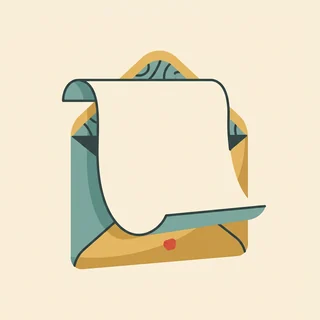

deutschoderwas · Sprechclub · Woche 11 · Strang C · Teil 1 · Montag, 23. November
Die dunkle Jahreszeit: Advent, Feiertage, Familie
Ab dem ersten Advent verändert sich Deutschland: Es wird früh dunkel, überall stehen Lichter, und alle reden über Termine mit der Familie. Für viele, die neu hier sind, ist das die fremdeste Zeit im Jahr — und die, in der am meisten gefragt wird, wie man es zu Hause macht.
Gleiches Thema, andere Sätze. Wechsle jederzeit — probier ruhig beide Seiten aus.
Erst mal ankommen
Zwei Runden. Erst reihum, dann zu zweit. Ein Satz genügt.
Runde 1 · reihum, ein Satz pro Person
Was machst du im Dezember?
Feierst du Weihnachten?
Wird es bei dir zu Hause auch so früh dunkel?
Was fällt dir an dieser Jahreszeit hier zuerst auf?
Welches Fest ist in deinem Land das wichtigste?
Was findest du schön daran, was anstrengend?
🔑 Drei Zeitangaben, die du brauchst:im Dezember (Monat), am 24. (Tag), an Weihnachten oder zu Weihnachten (Fest). Alle drei kommen in diesen Wochen ständig vor.
Runde 2 · zu zweit, fragt euch gegenseitig
Was machst du über die Feiertage?
Kochst du an Festtagen selbst?
Wen siehst du im Dezember am häufigsten?
Wie beantwortest du die Frage nach den Feiertagen, wenn du nicht viel erzählen willst?
Wie viel Familie ist für dich genug?
Was hast du hier übernommen, was nicht?
💡 Der Satz für alle Fälle:Ganz ruhig, mit der Familie — oder Dieses Jahr mache ich es ganz entspannt. Beides ist eine vollständige Antwort, und niemand fragt danach weiter.
🆘 Wie fange ich an?
Bei mir war das so: …Ich habe einmal …Ich glaube, das ist …
Bei mir war das so: …Ehrlich gesagt habe ich das noch nie …Mir fällt spontan ein Fall ein, in dem …
Vier Situationen — zwei Runden
1Runde 1: Lest den Dialog zu zweit laut.
2Runde 2: Klappt die Zeilen zu und sprecht frei — nur die Stichwörter bleiben.
Dialog 1 · „Die Frage in der Kaffeeküche“
A stellt die Standardfrage der Adventszeit. B ist neu hier und weiß nicht, wie ausführlich man antwortet.
A
Und, was machen Sie über die Feiertage?
B
Ganz ruhig, zu Hause. Und Sie?
🗣️ Eine kurze Antwort plus Rückfrage — mehr ist beim Small Talk nicht nötig. über die Feiertage heißt: die ganze Zeit hindurch.tippen = Hilfe zeigen
A
Wir fahren am 23. zu meinen Eltern und bleiben bis zum 27.
B
Klingt schön. Fahren Sie weit?
🗣️ am 23. für den Tag, bis zum 27. für das Ende. Und B hält das Gespräch mit einer kleinen Frage am Laufen.tippen = Hilfe zeigen
A
Drei Stunden. Feiern Sie das bei sich zu Hause auch?
B
Anders, aber wir feiern. Im Januar erzähle ich Ihnen mal davon.
🗣️ Eine freundliche Antwort, die nichts erklären muss. Im Januar erzähle ich Ihnen davon hält die Tür offen, ohne jetzt ins Detail zu gehen.tippen = Hilfe zeigen
Dialog 2 · „Auf dem Weihnachtsmarkt“
A war noch nie auf einem deutschen Weihnachtsmarkt. B erklärt, wie das hier läuft — auch mit den Bechern.
A
Warum muss ich denn für den Becher extra bezahlen?
B
Das ist Pfand. Bring ihn zurück, dann bekommst du das Geld wieder.
🗣️ Dasselbe Pfand wie auf der Flasche. Und der Becher ist der häufigste Grund für Verwirrung beim ersten Besuch.tippen = Hilfe zeigen
A
Ah, okay. Und wie lange hat der Markt denn auf?
B
Bis zum 23. Am 24. macht hier alles zu, auch die Supermärkte.
🗣️ bis zum 23. und am 24. — zwei Zeitangaben in einem Satz. Und die Information dahinter ist wirklich wichtig.tippen = Hilfe zeigen
A
Wirklich alles? Auch am 25. und 26.?
B
Alles. Deshalb kaufen hier alle am 23. wie verrückt ein.
🗣️ Der Satz, der jedem Neuankömmling einmal den Heiligabend rettet. wie verrückt ist Umgangssprache für: sehr viel, sehr hektisch.tippen = Hilfe zeigen

Dialog 3 · „Drei Einladungen, ein Wochenende“
A hat zu viele Einladungen und weiß nicht, wie man absagt. B rät zu Klarheit.
A
Ich habe drei Einladungen für dasselbe Wochenende. Was mache ich jetzt?
B
Zwei absagen. Und zwar gleich, nicht erst am Freitag.
🗣️ absagen — trennbar: Ich sage ab. Und der Zeitpunkt ist hier wichtiger als die Begründung.tippen = Hilfe zeigen
A
Ist das nicht unhöflich? Ich kenne die Leute erst seit Kurzem.
B
Im Gegenteil. Hier gilt ein klares Nein als höflicher als ein vages Vielleicht.
🗣️ Im Gegenteil dreht die Annahme um. Und der Grund dahinter: Gastgeber planen mit festen Zahlen.tippen = Hilfe zeigen
A
Und was schreibe ich?
B
Danke für die Einladung, dieses Mal schaffe ich es leider nicht. Fertig.
🗣️ Ein Satz, keine Erklärung. Fertig am Ende heißt: mehr braucht es wirklich nicht.tippen = Hilfe zeigen
Dialog 4 · „Zu viel Vorbereitung“
A steht schon seit Wochen unter Druck wegen des Fests. B fragt nach, wer diese Erwartungen eigentlich hat.
A
Die Vorbereitung dauert bei uns echt länger als das Fest.
B
Und wer erwartet das eigentlich — die anderen oder du?
🗣️ Eine Frage, die trifft. erwarten und das Nomen die Erwartung sind das Thema dieses Dialogs.tippen = Hilfe zeigen
A
Gute Frage. Wahrscheinlich vor allem ich selbst.
B
Dann schraub die Erwartungen doch dieses Jahr mal herunter.
🗣️ herunterschrauben — trennbar, und ein sehr schönes Bild: die Erwartungen kleiner drehen wie eine Lampe.tippen = Hilfe zeigen
A
Ich weiß halt nicht, ob ich das kann.
B
Fang mit einer Sache an. Am Ende zählt sowieso nur, dass alle zusammensitzen.
🗣️ anfangen mit plus Dativ. Und der letzte Satz ist der, den man in dieser Jahreszeit am häufigsten hört.tippen = Hilfe zeigen
🎭 Und jetzt ihr: Spielt Dialog 1 mit euren echten Plänen. Regel: Die erste Antwort ist kurz wie beim Small Talk, danach fragt der andere einmal nach.
Sätze, die sitzen müssen
Sag jeden einmal laut.
1 · 🗣️ Erzählen
Über die Feiertage bin ich zu Hause.
Am 24. sind wir bei meinen Eltern.
Bei uns gibt es …
Dieses Jahr mache ich es ganz ruhig.
2 · ❓ Fragen
Was macht ihr über die Feiertage?
Feiert ihr das auch?
Was gibt es bei euch zu essen?
Wie ist das in deinem Land?
3 · 🎁 Einladen
Komm doch vorbei!
Hast du am Sonntag Zeit?
Wir freuen uns, wenn du kommst.
Bring einfach nichts mit.
4 · 🙏 Absagen
Danke für die Einladung.
Dieses Mal schaffe ich es leider nicht.
Ein andermal sehr gern.
Ich melde mich im Januar.
1 · 🗣️ Genauer erzählen
Bei uns ist es Tradition, dass …
Wir machen es jedes Jahr gleich: …
Dieses Jahr wird es anders, weil …
Ehrlich gesagt ist mir das alles zu viel.
2 · ❓ Offen fragen
Wie läuft das bei euch ab?
Gibt es etwas, das ihr jedes Jahr macht?
Ist das für dich eher schön oder eher anstrengend?
Was hast du hier übernommen?
3 · 🎁 Herzlich einladen
Wir würden uns freuen, wenn du dazukommst.
Es ist ganz unkompliziert, wirklich.
Du musst überhaupt nichts mitbringen.
Sag einfach kurz Bescheid, ob es passt.
4 · 🙏 Klar absagen
Das ist lieb, aber es geht dieses Mal nicht.
Ich sage lieber gleich ab, als euch hinzuhalten.
Im Januar hole ich das nach.
Ich brauche über die Feiertage wirklich Ruhe.
✅ Und jetzt zu zweit: Deckt die Sätze zu. Einer nennt den Schritt, der andere sagt den Satz aus dem Kopf. Danach tauschen.
⏱️ Die 90-Sekunden-Challenge
Neunzig Sekunden über deinen Dezember: Was machst du, wen siehst du, worauf freust du dich — und was ist dir zu viel?
Dein Wort
der Advent
1:30
Vier Sätze, dann trägt dich die Zeit:
Was:Über die Feiertage bin ich …
Wann:Am 24. machen wir …, am 25. …
Bei uns zu Hause:Bei uns ist es Tradition, dass …
Ehrlich:Am meisten freue ich mich auf …, zu viel ist mir …
Und wenn du das Fest gar nicht feierst: umso besser. Erzähl, was du stattdessen machst und wie die Wochen für dich sind — genau darüber redet in Deutschland kaum jemand, und alle hören zu.
⏱️ Spielregel: In jeder Runde müssen drei verschiedene Zeitangaben vorkommen — im, am, an, über oder zwischen. Wer keine benutzt, fängt noch einmal an.
🎭 Drei Situationen zu zweit
1Einer fragt, einer erzählt.
2Danach tauschen — beim zweiten Mal ohne die Sätze unten.
3Mindestens drei Zeitangaben pro Runde.
1Die Frage in der Kaffeeküche
A
stellt die übliche Frage nach den Feiertagen.
B
antwortet erst kurz, dann — nach einer Nachfrage — etwas ausführlicher.
Sätze, die dir helfen
Was machen Sie über die Feiertage?Fahren Sie weit?Feiern Sie das bei sich auch?Dann wünsche ich Ihnen schöne Tage!
Ganz ruhig, zu Hause — und Sie?Wir fahren am 23. los und bleiben bis zum 27.Bei uns ist es anders, aber wir feiern auchIm Januar erzähle ich Ihnen gern mehr davon
🎯 Geschafft, wennDie erste Antwort war kurz, die zweite etwas länger. Und mindestens dreimal kam eine Zeitangabe vor — über, am, bis zum.
🆘 Und wenn B nein sagt?
Das verstehe ich. Aber …Kann ich bitte fragen: …?Was kann ich jetzt machen?
Das verstehe ich — trotzdem bleibe ich dabei: …Darf ich kurz nachfragen: …?Wer kann das denn entscheiden?
2Zum ersten Mal auf dem Weihnachtsmarkt
A
war noch nie hier und versteht die Sache mit dem Becher nicht.
B
erklärt geduldig — und warnt vor den geschlossenen Läden.
Sätze, die dir helfen
Warum zahle ich für den Becher extra?Wie lange hat der Markt auf?Sind am 25. wirklich alle Läden zu?Gut, dass Sie es sagen
Das ist Pfand, bring ihn zurück und du bekommst das Geld wiederBis zum 23., danach macht hier alles zuAuch die Supermärkte, deshalb kaufen alle am 23. wie verrückt einAm besten besorgst du alles schon am 22.
🎯 Geschafft, wennBeide haben über Pfand und über die Öffnungszeiten geredet. Und A weiß jetzt, was am 24. passiert.
🆘 Und wenn B nein sagt?
Das verstehe ich. Aber …Kann ich bitte fragen: …?Was kann ich jetzt machen?
Das verstehe ich — trotzdem bleibe ich dabei: …Darf ich kurz nachfragen: …?Wer kann das denn entscheiden?
3Höflich absagen
A
hat drei Einladungen für dasselbe Wochenende und will niemanden verletzen.
B
rät zu einer klaren, frühen Absage.
Sätze, die dir helfen
Ich habe drei Einladungen für dasselbe WochenendeIst absagen nicht unhöflich?Was schreibe ich denn?Und wenn sie beleidigt sind?
Sag zwei ab, und zwar gleich, nicht erst am FreitagHier gilt ein klares Nein als höflicher als ein vages VielleichtDanke für die Einladung, dieses Mal schaffe ich es leider nicht — mehr braucht es nichtDie Gastgeber planen mit Zahlen, die sind eher froh
🎯 Geschafft, wennA hat eine Absage laut formuliert, ohne sich lange zu rechtfertigen. Und beide haben verstanden, warum früh besser ist als spät.
🆘 Und wenn B nein sagt?
Das verstehe ich. Aber …Kann ich bitte fragen: …?Was kann ich jetzt machen?
Das verstehe ich — trotzdem bleibe ich dabei: …Darf ich kurz nachfragen: …?Wer kann das denn entscheiden?
🎴 Sprechkarten
Zieh eine Karte. Vier Sätze am Stück.
Deine Aufgabe
Tippe auf den Knopf.
Drei gegen drei
Zwei Gruppen, eine Frage. Abwechselnd sprechen.
Im Dezember ist zu viel los.
Gruppe A · dafür
Jedes Wochenende ist verplant.
Vor dem Fest ist der Stress am größten.
Ruhe hat man erst zwischen den Jahren.
Gruppe B · dagegen
Einmal im Jahr sieht man alle.
Die Lichter tun in der dunklen Zeit gut.
Man kann auch absagen.
Zum Schluss
Ein Satz von jedem.
Welchen Satz von heute nimmst du mit — und wo brauchst du ihn?
🆘 Wie fange ich an?
Ich nehme mit: …Ich will den Satz „…“ benutzen.Neu war für mich: …
Ich nehme mit, dass …Den Satz „…“ will ich nächste Woche wirklich benutzen.Neu war für mich, dass …
📮 Deine Hausaufgabe bis Mittwoch
Vier kleine Aufgaben, zusammen etwa 25 Minuten. Am Mittwoch geht es weiter mit der großen Debatte über genau dieses Thema.
💡 Warum das hilft: In den nächsten vier Wochen wirst du diese Frage täglich gestellt bekommen — im Büro, beim Arzt, im Treppenhaus. Wer eine kurze und eine lange Antwort parat hat, muss nie wieder überlegen, wie ausführlich er sein soll.
0 von 0 Aufgaben geschafft.
So sehen die zehn Sätze aus:
Im Dezember wird es hier schon um vier dunkel.
Am 24. bin ich bei meinen Eltern.
An Weihnachten gibt es bei uns immer dasselbe Essen.
Über die Feiertage bleibe ich zu Hause.
Zwischen den Jahren habe ich frei.
Ein einziger Test genügt: Frag dich, wie groß der Zeitraum ist. Monat heißt im, Tag heißt am, Uhrzeit heißt um — und ein Fest steht ohne Artikel mit an oder zu.
Das sind die Stellen, auf die es in der Einladung ankommt:
Anlass:Wir machen am Samstag, dem 12., einen kleinen Adventsnachmittag.
Zeit und Ort:Ab 15 Uhr bei uns in der Wohnung, es geht bis ungefähr 18 Uhr.
Druck rausnehmen:Es ist ganz unkompliziert, ihr müsst nichts mitbringen.
Rückmeldung:Sagt einfach kurz Bescheid, ob es bei euch passt.
Schluss:Wir würden uns freuen — und wenn es nicht klappt, ist das auch völlig in Ordnung.
Und ein Hinweis, der in Deutschland viel wert ist: Schreib immer von wann bis wann. Gäste planen hier mit Uhrzeiten, und eine Einladung ohne Ende macht mehr Leuten Stress, als man denkt.